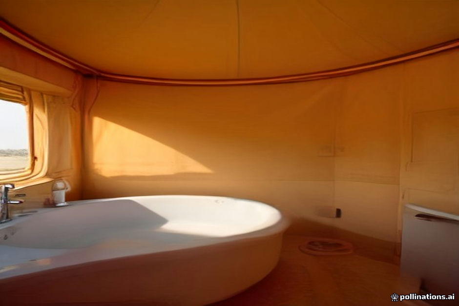

Water is the scarcest resource in the dunes of Erg Chebbi. Operating a camp with functional plumbing miles from municipal infrastructure requires trucked-in water supplies, septic systems buried beneath shifting sand, and solar-powered pumping stations. It is an impressive operational achievement, but one that comes with distinct environmental and physical limits.
Whether you book a basic camp with shared facilities or a luxury setup with private en-suite bathrooms, knowing what to expect prevents surprises. Here is an honest explanation of how desert plumbing works, what breaks down, and how to stay comfortable while managing personal hygiene in the sand.
Standard Shared Blocks vs. Luxury En-Suite Facilities
Desert camps around Merzouga generally fall into two structural categories regarding sanitation. Standard traditional camps use a central bathroom facility located 20 to 50 meters away from the sleeping tents. These blocks contain individual stalls with ceramic flush toilets, small washbasins, and shared shower cubicles.
Luxury camps feature fully private en-suite bathroom modules integrated directly into the rear of each canvas tent. Separated by zipped canvas walls or wooden doors, these spaces include flush toilets, brass sinks, and tiled shower stalls connected to individual water lines. For a detailed breakdown of camp comfort levels, review our guide to Sahara camp tier comparisons.
- Standard Camps: Shared central structures, simple gravity-fed flushing, solar-heated showers.
- Luxury Camps: Private en-suite canvas partitions, integrated septic lines, solar water pumps.
Water Pressure, Hot Water, and Winter Dynamics
Water pressure in the dunes rarely matches what you experience in urban hotels or Marrakech riads. Water pumps run on solar battery banks, producing moderate, steady streams rather than high-pressure blasts. Conserving water is a necessity for camp operational stability.
Water heating relies on rooftop solar thermal collectors backed by gas cylinders. During hot summer months, hot water is immediate and constant. However, during desert winter nights (December through February), ambient temperatures drop rapidly. Showers taken late at night or before dawn can be lukewarm; the warmest water is always available between 15:00 and 17:30 after peak daytime sun exposure.
Septic Tanks, Odors, and Dunes Management
Managing sewage deep in sand dunes requires concrete septic tanks buried beneath the desert floor. These tanks are periodically pumped out and serviced by specialized trucks navigating off-road tracks from Merzouga village.
During severe sandstorms or high wind events, fine sand dust can collect in pipe traps or block external sewer vent pipes. This occasionally causes slow drainage or faint, temporary sewer odors. Camp staff inspect and clear traps daily, but sand encroachment remains an ongoing maintenance reality in the Sahara.
Hygiene Practices and What to Pack
While luxury camps supply towels, soap, and toilet paper, remaining comfortable in a dusty desert environment requires minimal preparation. Sand fine enough to enter tent zips also settles on bathroom surfaces. Keeping hand sanitizer and personal wipe packs in your daypack makes routine cleanup simpler.
Pipe diameters in desert plumbing systems are smaller than city standards. Paper hand towels, wet wipes, and feminine hygiene products must never be flushed down camp toilets, as clearing sand-and-fiber clogs in the desert requires extensive manual work by maintenance crews. Consult our packing checklist for recommended toiletries.
- Shower late in the afternoon to take advantage of peak solar heating.
- Dispose of all wipes and hygiene products in the waste bins provided.
- Keep toilet paper or tissues in your daypack for stops along the drive.
| Facility Feature | Standard / Basic Camp | Luxury En-Suite Camp |
|---|---|---|
| Toilet Access | Shared central block (short walk) | Private attached tent module |
| Flush System | Manual gravity or simple flush | Standard low-flow porcelain flush |
| Hot Water Source | Solar tank (lukewarm at night) | Solar collector + gas water heater |
| Towels & Soap | Bring personal towel & soap | Towels and hand soap provided |
| Water Pressure | Low flow | Moderate, consistent flow |

Illustration, not a photograph — for the real thing, you'll have to stand on the ridge yourself.
Quick answers
A few follow-up questions travelers ask about this.
Is tap water in desert camp bathrooms safe to drink?
No. Camp tap water comes from local wells or storage tanks. It is safe for brushing teeth and washing hands, but drink only sealed bottled water.
Are camp bathrooms clean and disinfected?
Yes. Staff disinfect facilities daily. While fine dune dust is impossible to eliminate entirely, porcelain and metal fixtures are kept clean.
What happens if water stops working in our tent?
Camp crews keep backup gas generators and water buckets nearby. Minor pump trip issues are usually fixed by on-site staff within 10–15 minutes.
Planning your own route?
Tell us your dates and what matters to you — we'll answer with a straight recommendation, not a brochure.
Send an inquiry See the itineraries